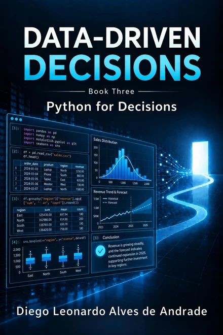

Livros
Escrevi cinco livros: uma trilogia em inglês sobre decisões com dados e dois livros em português, um sobre negócios e outro que percorre a ciência de dados inteira.
ENEm inglêsTrilogia Data-Driven Decisions
 EN
ENSQL for Decisions
 EN
ENPower BI for Decisions

ENPython for Decisions


SQL for Decisions
Data-Driven Decisions, Book One
Livro 1 da trilogia
Como transformar uma decisão real numa pergunta que o banco de dados consegue responder, e a resposta em algo que uma pessoa pode defender numa reunião. A sintaxe é comum; o livro ensina o hábito em volta dela: contar com honestidade, desconfiar da fonte e montar a consulta a serviço da decisão.
A query that runs is easy.
Capítulos (10)
- The Decision Behind the Query
- Counting Honestly
- Trusting the Source
- Joining Tables Into a Question
- Reusable Logic With CTEs
- Ranking and Trends With Window Functions
- Turning Queries Into Models With dbt
- Performance When the Data Grows
- The SQL Decision, End to End
- Worked Build, Query by Query
Power BI for Decisions
Data-Driven Decisions, Book Two
Livro 2 da trilogia
Leva a resposta do SQL até um relatório que alguém que não escreveu a consulta consegue abrir, navegar e usar. O foco está no julgamento em volta dos botões: o que o relatório precisa dizer antes do primeiro gráfico, o modelo que torna fáceis as perguntas difíceis, e a honestidade que separa um relatório que esclarece de um que bajula.
A report is only as honest as the data behind it.
Capítulos (10)
- Shaping Data With Power Query
- The Star Schema
- Measures That Mean Something
- Filter Context, the Idea Behind DAX
- The Chart Catalog as a Method
- Tables That Decide
- Designing the Message in Figma
- Telling the Story and Not Lying
- Refreshing and Sharing at Scale
- Worked Build, Wireframe to Published
Python for Decisions
Data-Driven Decisions, Book Three
Livro 3 da trilogia
Usa Python quando a decisão pede algo que nem a consulta nem o relatório entregam: exploração aberta, um teste estatístico, uma projeção. O notebook é lido como um argumento, a distribuição é examinada antes de confiar na média, e uma relação é testada antes de alguém agir em cima dela.
A notebook read as an argument.
Capítulos (10)
- The Notebook as a Decision Journal
- Cleaning and Reshaping With pandas
- Distributions and Segments
- Relationships and Correlation
- Is It Real? Significance and Confidence
- Time Series and Seasonality
- Projection and Scenarios
- Charts That Carry an Argument
- The Python Decision, End to End
- Worked Build, A Full Analysis, Cell by Cell
Uma decisão, três ferramentas
Os três livros resolvem o mesmo caso, cada um com sua ferramenta. Uma linha de produtos fatura 180 mil, está em 47º lugar entre 50 e custa 171 mil para manter. O contrato de fornecimento ainda tem 8 meses e cobra multa para sair antes. Manter, cortar agora ou encerrar no fim do contrato?
SQL for Decisions, capítulo 9
WITH line_sales AS (
SELECT product_line, SUM(quantity*unit_price) AS revenue
FROM stg_sales
WHERE sale_date >= '2023-07-01'
GROUP BY product_line
),
line_cost AS (
SELECT product_line, SUM(loaded_cost) AS cost
FROM stg_costs GROUP BY product_line
)
SELECT s.product_line, s.revenue, c.cost,
s.revenue - c.cost AS margin
FROM line_sales s
LEFT JOIN line_cost c USING (product_line)
ORDER BY margin;Mostra que o 47º lugar é de receita, não de lucro: a linha custa 171 mil e ainda deixa 9 mil de margem.
Power BI for Decisions, capítulo 10
Margin % = DIVIDE ( [Revenue] - [Cost], [Revenue] )Coloca a margem num cartão que qualquer gestor lê: 5,0%, fina, mas ainda positiva.
Python for Decisions, capítulo 9
t_stat, p_val = stats.ttest_ind(margin_pct[:6], margin_pct[6:])
print(f"p = {p_val:.3f}")p = 0,297: a queda de 5,28% para 4,86% entre os semestres pode ser acaso. Nos cenários até o fim do contrato, a margem fica entre 4,07% e 5,87%, sempre positiva, então a multa não se paga.
A recomendação dos três livros: não pagar a multa. Parar de repor estoque, encerrar a linha no fim do contrato e revisar a tendência até lá.
O método, nos projetos
A trilogia ensina cinco passos. Cada um aparece num projeto deste site.
Nomear a decisão
Treinar um modelo próprio ou pagar uma API? A pergunta vem antes do código, e a resposta é um volume mensal a partir do qual a conta muda.
Confiar no dado
Cada lote passa por cinco checagens antes de chegar ao painel; se falhar, o painel mantém o último dado bom.
Mostrar o trabalho
Cada resposta cita o trecho do relatório de onde veio, e a citação é conferida antes de sair.
Ler a tendência
Antes e depois da taxa de congestionamento, com o aviso de que parte da mudança pode ser sazonal.
Fazer durar
Cada mudança é testada contra chamadas gravadas, e uma regressão é barrada antes de ir ao ar.
Anotações sobre Negócios
Reflexões práticas para gerenciar, liderar e fazer acontecer
Oito capítulos sobre o que separa quem transforma uma ideia em negócio de quem apenas tenta: validar o problema antes da solução, posicionar-se contra concorrentes, liderar times, vender, reconhecer os próprios vieses ao decidir e entender por que empresas gigantes caem.
O que separa quem transforma uma ideia em negócio de verdade de quem apenas tenta?
Capítulos (8)
- Mentalidade e visão
- Validação do problema
- Estratégia competitiva e posicionamento
- Inovação e desenvolvimento de produto
- Liderança e gestão de alta performance
- Vendas, influência e persuasão
- Vieses cognitivos e tomada de decisões
- Escala, inovação e o porquê da queda dos gigantes
O Cânone da Ciência de Dados Moderna
Territórios e fundamentos
Um mapa completo do ofício, do Python e da estatística até transformers, MLOps e carreira, escrito para preencher o espaço entre o livro traduzido denso demais e o tutorial raso demais. Sete partes, dezenove capítulos e um projeto completo no apêndice.
Que o tempo investido aqui sirva ao trabalho que vem em seguida.
O mapa do Cânone
As sete partes do livro, no tamanho real que ocupam nas 1.042 páginas. Abra uma parte para ver os capítulos.
IO Alicercep. 11–231
- 1A filosofia e o mindset do cientista de dadosp. 11
- 2Python essencial e manipulação de arquivosp. 60
- 3Matemática fundamental para deep learningp. 127
- 4Excel e sua prática avançadap. 191
IIO Coração Estatísticop. 232–435
- 5Análise exploratória de dados e visualização científicap. 232
- 6Probabilidade e distribuiçõesp. 319
- 7Pensamento bayesianop. 355
- 8Inferência causal e experimentaçãop. 398
IIIEngenharia de Dadosp. 436–667
- 9Engenharia de dados, com bancos de dados na prática: PostgreSQL e MongoDBp. 436
- 10Fluxo canônico de machine learning e regressãop. 534
- 11Classificação clássica, árvores e florestas, com AutoML em profundidadep. 586
IVMachine Learning Supervisionado e Não Supervisionadop. 668–802
- 12Não supervisionado e sistemas de recomendaçãop. 668
- 13Séries temporais, com análise prescritiva e otimizaçãop. 720
VRedes Neurais e a Fronteira da IAp. 803–946
- 14Aprendizado profundop. 803
- 15Visão computacional e redes convolucionaisp. 840
- 16Redes recorrentes e transformersp. 874
- 17Modelos generativos e deep reinforcement learningp. 910
VISistemas de Dados em Escala e Operação de Modelosp. 947–990
- 18Big data, stream processing e MLOpsp. 947
VIIComunicação, Gestão e Carreirap. 991–1.027
- 19Comunicação, gestão e carreirap. 991
- AApêndice: Projeto Completo de Data Sciencep. 1.028–1.042